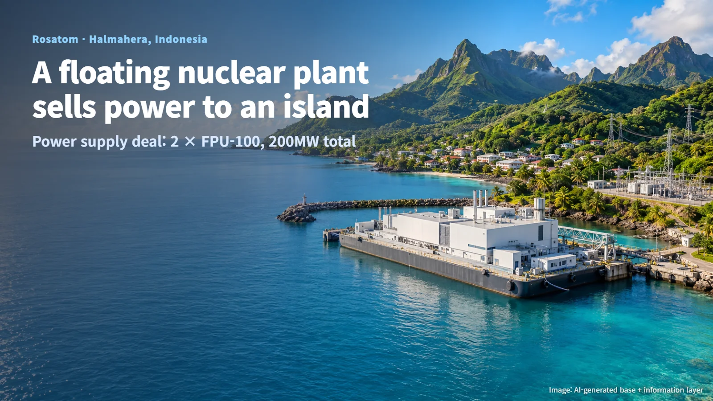
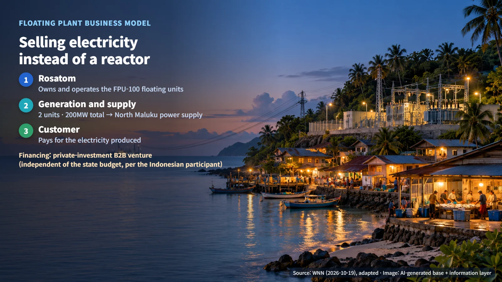
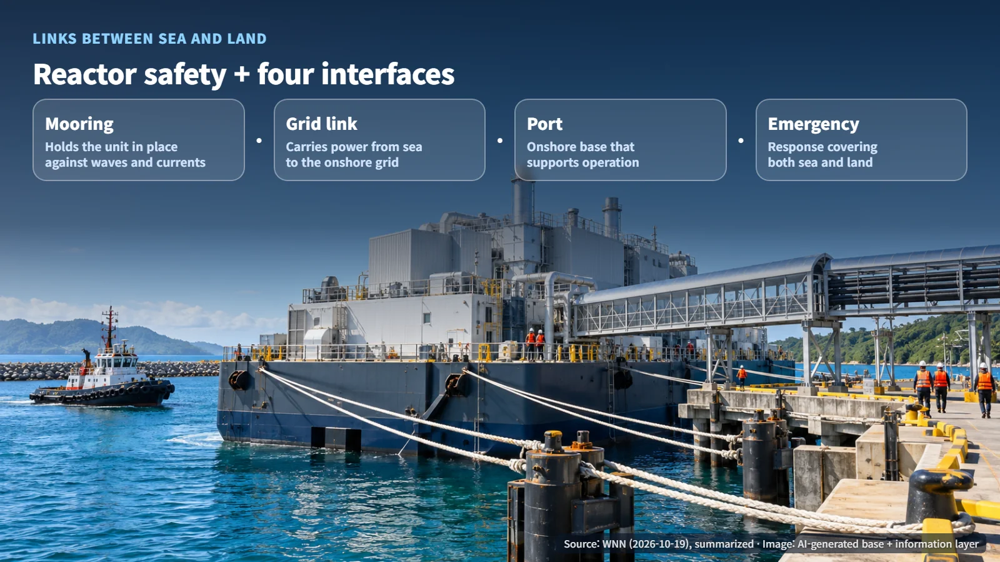
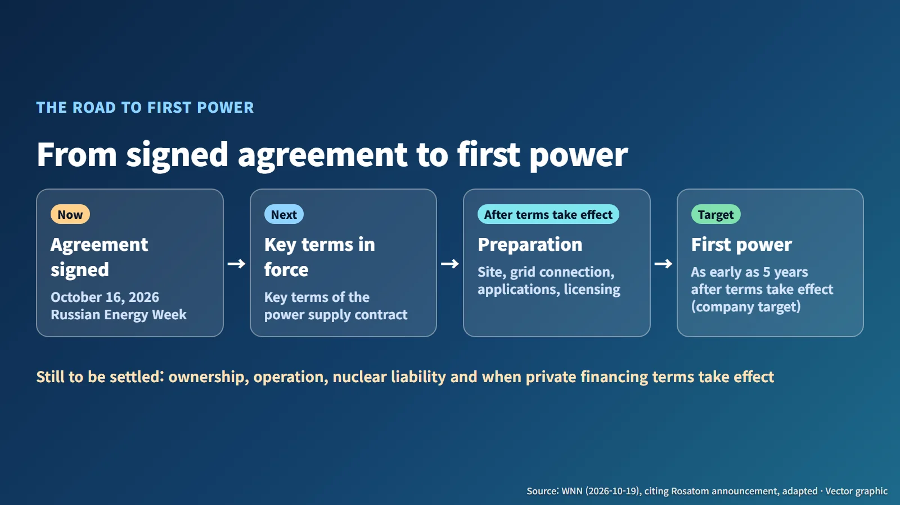

Indonesia · Floating Nuclear Power
A Floating Nuclear Plant That Sells Power to an Island: The Rosatom–Indonesia Agreement
Rosatom will own and operate two floating FPU-100 units and sell their electricity to northern Halmahera, with first power targeted as early as five years after the key contract terms take effect.
Editorial responsibility: GlobalNuclearNews
For people who live on islands, a reliable electricity supply is a harder problem than it might seem. There is often too little land for a large power station, and a transmission link to the mainland may be out of reach. So what if the power plant could float like a ship and be brought right up to the island's shore? In October 2026, exactly this idea moved a step forward in Indonesia with a signed agreement. Let's look at how a business that supplies an island with electricity from a floating nuclear plant is structured, and which steps remain before the first power flows.

200 MW Off the Coast of Halmahera
On October 19, World Nuclear News (WNN) reported that the Russian nuclear company Rosatom and Indonesia's PT Pembangkit Listrik Nuklir had signed an agreement to supply power from a floating nuclear plant to the northern part of Halmahera island. The agreement itself was signed a few days earlier, on October 16, during Russian Energy Week.
A floating nuclear plant carries its reactor on a ship- or barge-type platform. The platform is moored securely near the coast, and the electricity it generates is sent ashore. This project envisages two FPU-100 floating power units with a combined 200 MW, intended to build a foundation for the power supply of the North Maluku region.
The appeal for an island setting is easy to see. Much of the heavy work of building a power plant can happen elsewhere, and the finished unit is then brought to the site by sea. The island side mainly needs a secure mooring, a connection to the local grid and the supporting facilities on shore.
Picture two power units floating side by side in calm water off the island, with the electricity they produce running along cables into the island's grid, and you have the basic shape of this project.
Selling Electricity Instead of Selling a Reactor
The most interesting part of this project is how the deal works. Under the floating plant business model described by WNN, Rosatom owns and operates the units, and the customer pays for the electricity they produce. Rather than a one-time sale of a reactor, the arrangement resembles a long-term power service that delivers electricity over many years.

An everyday comparison is renting a water purifier instead of buying one. The supplier is responsible for looking after the equipment, and the user pays for what they use. That is why the backbone of the business lies in deciding who handles operation, maintenance and fuel handling, and how roles are divided under a long-term power sale.
On financing, the Indonesian participant described the project as a business-to-business venture based on private investment, independent of the state budget. Detailed financing terms have not yet been disclosed.
The Links a Floating Plant Needs: Mooring, Grid Connection and Emergency Response
The safety of a floating nuclear plant begins with the safety of the reactor itself and then extends to the many links that join sea and land. It helps to imagine the floating unit, the mooring equipment on shore, the transmission cables and the port facilities all working together as a single system.

- Mooring: the equipment that holds the unit in place against waves and currents.
- Grid connection: the link that carries electricity generated at sea into the onshore grid.
- Port: the onshore infrastructure that supports the operation of the floating unit.
- Emergency response: an emergency system that covers both the sea and the land.
Institutional links come on top of these physical ones. Still to be settled are who owns and operates the units, who bears nuclear liability (the responsibility to compensate for damage if a nuclear accident occurs) and how, and under what conditions the power contract and private financing terms take effect.
The Steps Remaining Before First Power
The project is currently at the agreement signed stage. On timing, Rosatom's original announcement said it expects to supply first power as early as five years after the key terms of the power supply contract take effect. This is a target set by the company, and the five-year clock starts when those key contract terms come into force.

Mark the contract taking effect on a calendar as the starting point and write "first power" five years later, and the work that has to fill the gap becomes visible:
1. Confirming the deployment site and planning the grid connection 2. Regulatory applications and Indonesia's approval procedures 3. Obtaining construction and operating licenses 4. Settling ownership, operation and nuclear liability, and bringing the power contract and private financing terms into effect
These tasks are closely linked. The site choice shapes the grid connection plan, the licensing work builds on both, and the financing and liability arrangements give the whole package a firm footing. For readers following the story, the next milestones to watch are the key terms of the power supply contract taking effect and the first regulatory filings in Indonesia.
Each of these steps that moves forward brings the floating nuclear plant concept one step closer to delivering real electricity.
A floating nuclear plant is a power station, and it is also a long-term promise to exchange electricity with an island. Following how that promise off the coast of Halmahera passes through each procedure and turns into real lights on shore offers a closer look at how nuclear power can become part of everyday island life.
Revision r003 · October 26, 2026. Source links expanded and editorial attribution added.